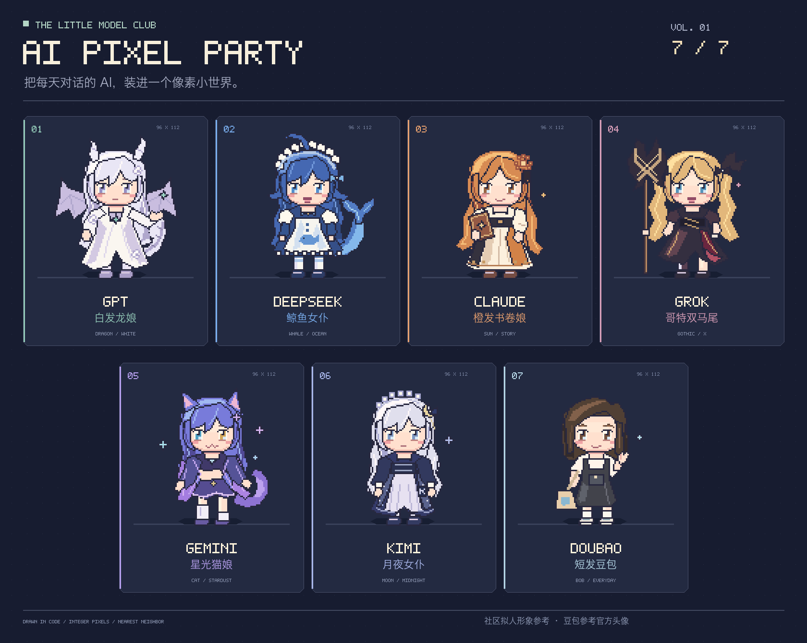

THE LITTLE MODEL CLUB / MOTION LIBRARY 09
像素伙伴，细看一下。
十二帧，细看抬手到收回的每一次小动作。
10位伙伴
12公共动作
30特有动作
今天想看看谁？
SELECT A CHARACTER动作预览48 × 64 / PIXEL ART
公共动作走路
双脚交替承重，头发与尾巴稍晚跟上。
F1右前 45°
2.5D / THREE-QUARTER VIEW拖动进度条逐帧查看 · 聚焦画面后，← → 切帧，空格播放或暂停
F1 的三个小习惯
CHARACTER ONLY / 03点标记换位伙伴，再选一张动作卡片放大或逐帧查看。
8 / 12 帧，同速对照
左侧保留早期八帧原画，右侧是当前素材。跟随所选角色、动作和朝向，两边使用相同的动作时长。
F1 · 肉垫贴贴
8 帧 · 早期参考
12 帧 · 当前素材
12 帧动作分解
跟随所选动作展示完整十二帧。点击任一帧，检查重心、手势与道具遮挡。
换个角度认识她
FRONT / THREE-QUARTER / BACK大家都会的十二种动作
SHARED MOTION SHEET待机、走跑和日常生活。公共动作与上方的角色特有动作分别收藏。
立绘收藏 · PIXEL PARTY
THE WHOLE FAMILY / 10保留第一版七位 AI 的像素立绘，C0、X0、F1 也来合照了。点开卡片，放大看看。
展开最初的 AI PIXEL PARTY 海报 VOL. 01 · 7 / 7
